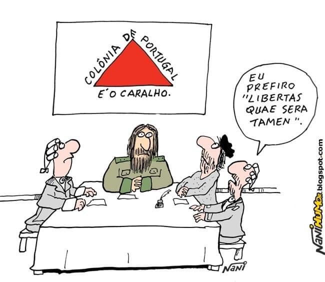

Revolta da Vila Rica
A Revolta de Filipe dos Santos (Revolta de Vila Rica): A Guerra do Ouro.
Contexto Histórico;
A Revolta de Vila Rica, também conhecida como a Revolta de Filipe dos Santos, ocorreu em 1720 na cidade de Vila Rica (atual Ouro Preto), em Minas Gerais. Foi um movimento de caráter nativista (não separatista, mas contra a política metropolitana) que explodiu no auge do Ciclo do Ouro.
Causas e Estopim
A revolta foi motivada pela intensa e crescente fiscalização portuguesa sobre a extração e circulação do ouro:
O Quinto: A Coroa cobrava o imposto do Quinto (20% do ouro) em todas as transações, o que era difícil de fiscalizar com o ouro circulando em pó ou pepitas.
Criação das Casas de Fundição: O estopim da revolta foi o anúncio da instalação das Casas de Fundição. A Coroa exigia que todo o ouro extraído fosse levado a essas casas, onde seria fundido em barras, selado com o selo real e onde o Quinto seria imediatamente recolhido. Era proibida a circulação de ouro em pó.
Os mineradores e a população viam nas Casas de Fundição não apenas uma forma de aumentar a arrecadação da Coroa, mas também uma ameaça ao contrabando (que era uma prática comum para fugir do imposto) e à circulação do ouro como moeda, o que prejudicava os negócios e a economia local.
O Movimento
Liderança: A revolta foi liderada por Filipe dos Santos Freire, um rico tropeiro (comerciante de mulas) que era de extrema popularidade. Ele conseguiu mobilizar uma massa de mineradores, tropeiros e populares insatisfeitos.
Ações: Cerca de 1.500 revoltosos, liderados por Filipe dos Santos, invadiram a cidade de Vila Rica e exigiram a suspensão da instalação das Casas de Fundição e a destituição do ouvidor (juiz) local.
Negociação: O governador da Capitania de São Paulo e Minas de Ouro, Conde de Assumar, inicialmente negociou com os revoltosos, prometendo atender às suas exigências.
Repressão e Consequências
Traição e Repressão: O Conde de Assumar, após dispersar os revoltosos com promessas, agiu rapidamente para prender os líderes. A repressão foi violenta para servir de aviso.
Execução de Filipe dos Santos: Filipe dos Santos foi sumariamente julgado e condenado à morte. Foi enforcado e, em seguida, esquartejado em praça pública em 1720.
Resultado: O movimento foi esmagado e as Casas de Fundição foram instaladas, consolidando o controle fiscal português sobre o ouro. A Coroa criou a Capitania de Minas Gerais, separando-a de São Paulo, para ter um controle administrativo mais direto sobre a região mineradora.

Inconfidência Mineira
A Inconfidência Mineira: O Ideal Republicano Frustrado.
Contexto Histórico;
A Inconfidência Mineira, também conhecida como Conjuração Mineira, foi um dos mais importantes movimentos separatistas da história do Brasil Colônia. Ocorreu em Minas Gerais no ano de 1789, no auge do ciclo do ouro.
Causas do Movimento
O movimento foi liderado pela elite mineira (proprietários de terras, mineradores, poetas, clérigos e militares), insatisfeita com a política fiscal opressiva de Portugal:
Queda na Produção de Ouro: A produção de ouro começou a declinar a partir de meados do século XVIII.
Manutenção dos Impostos: Mesmo com a queda, a Coroa Portuguesa mantinha a cobrança do "Quinto" (20% de todo ouro extraído) e exigia uma cota mínima anual de 100 arrobas de ouro.
Ameaça da Derrama: O principal estopim foi a ameaça de se aplicar a Derrama, uma medida extrema de cobrança forçada de todos os impostos atrasados, que amedrontava a população e, sobretudo, a elite endividada.
Influências Iluministas e Exemplos Externos: Os inconfidentes eram fortemente influenciados pelas ideias iluministas (liberdade, igualdade) e pelo exemplo da Independência dos Estados Unidos (1776), que demonstravam ser possível romper com o domínio colonial e adotar a forma republicana de governo.
Objetivos e Líderes
Os objetivos dos inconfidentes eram:
Proclamar uma República em Minas Gerais, com a capital em São João del-Rei (ou Vila Rica).
Estabelecer uma universidade.
Incentivar o desenvolvimento de manufaturas (proibidas por Portugal).
O perdão das dívidas dos envolvidos.
O movimento não tinha consenso sobre a abolição da escravidão, o que evidencia seu caráter de revolta da elite. O membro mais popular e o maior entusiasta da conspiração foi Joaquim José da Silva Xavier, o Tiradentes, alferes da cavalaria e dentista amador.
Repressão e Consequências
O movimento não chegou a eclodir. Foi denunciado por alguns de seus membros (como o coronel Silvério dos Reis), em troca do perdão de suas dívidas com a Coroa.
Os líderes foram presos. O processo (devassa) se arrastou por anos.
Em 1792, a rainha D. Maria I comutou a pena de morte da maioria dos inconfidentes para degredo (expulsão para colônias na África), mas manteve a pena para Tiradentes.
Tiradentes foi o único executado. Foi enforcado e depois esquartejado em praça pública no Rio de Janeiro, em 21 de abril de 1792, servindo de exemplo para coibir futuras revoltas.
Apesar de ter fracassado, a Inconfidência Mineira marcou a crescente insatisfação da elite colonial e a emergência de ideais republicanos no Brasil.